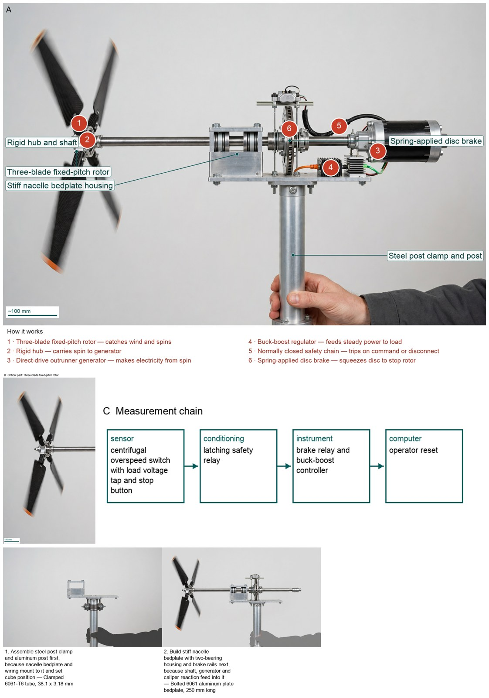
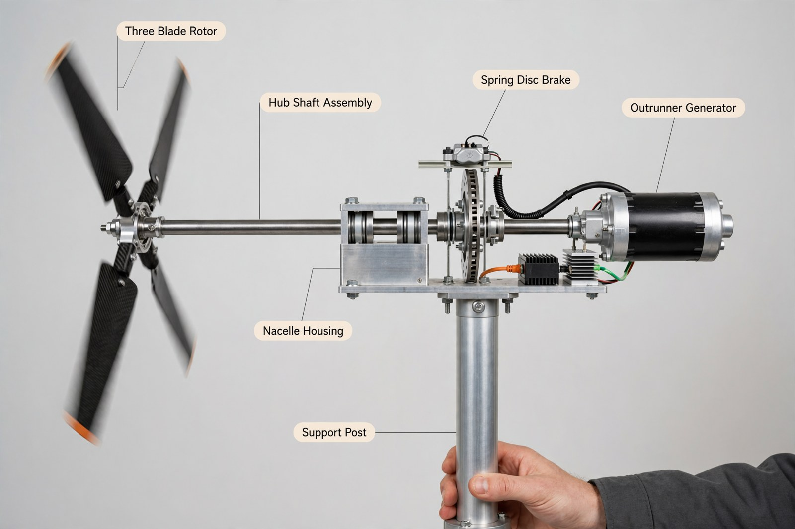

Hardware Engineer — concept report
Small wind turbine for a wind-tunnel competition
Design a small wind turbine that produces as much electricity as possible in a wind tunnel, survives strong gusts, and shuts itself down safely on command or when its electrical load is disconnected.
- Every part of the turbine (rotor and body) fits inside a 45 cm cube; only the mounting post below it may be outside
- Survives continuous wind of 22 m/s without damage
- Produces power between 5 and 11 m/s wind
- When the load is disconnected or on command, the rotor slows to below 10% of its top speed within 10 seconds and stays there
The concept

Wind spins a 40 cm three-blade rotor to make electricity for a steady load, and if the stop button is pressed or the load is lost a spring squeezes a disc while extra spin turns to heat to stop in under 1 s and stay stopped.
Energy: three-blade rotor -> outrunner generator -> dump resistor grid | Measured: overspeed switch -> latching relay
Three decisive design choices
- Choose SD7080 TSR 6 Cp 0.34 rotor (C2) over generic 3-blade (C1) because C2 gives quantified low-wind power 3.27 W at 5 m/s (E11) and 34.7 W at 11 m/s (E12) from available powers (E9)(E10) per source (E3) with same 40 cm fit as winner practice (E2).
- Keep direct-drive outrunner plus bridge (C14) but correct winding to 170 to 180 Kv because 220 Kv low volts 6.50 V (E37) sits below 8 V regulator minimum (E60) per O2, while 170 Kv gives 8.41 V low and 18.5 V top (E76) inside 8 to 40 V with unchanged rotor speeds and shaft powers.
- Choose upsized 0.80 N-m spring-applied solenoid-released disc plus 4 ohm dump (C21 as upsized) over dump alone (C16) which fails at 9123 rpm with 0.155 N-m vs 0.48 N-m aero (E48) because only combined brake crosses 315 rpm in 0.673 s and holds at 0 rpm at 10 s with margins 1.67 and 1.11 (E70) satisfying 10 s rule (E41).
Do bench tests confirm power curve, timed stop, re-latch restart and parked torque on built hardware?
What happened
How the picture was made


What the segmenter saw (SAM 3.1)
Code asked SAM for each part by a plain phrase and measured the boxes against what the design expects; the critic received the differences as evidence.

How the council changed
The council's instructions were not rewritten in this run.
References
60 sources found by the council's searches and the prior-art check (click to open)
- energy.gov — Pennsylvania State University Wind Energy Club CWC Technical Design Report (2020) https://www.energy.gov/sites/prod/files/2020/10/f80/psu-technicaldesign.pdf
- ceias.nau.edu — Collegiate Wind Competition: Mechanical Design (2018) https://ceias.nau.edu/capstone/projects/ME/2018/CollegiateWindCompetition/documentsa/Mechanical Final Poster.pdf
- energy.gov — Collegiate Wind Challenge 2023 - University of Colorado - Design Report (2023) https://www.energy.gov/media/301232
- energy.gov — Turbine Design Report - 2024 Collegiate Wind Competition - California Polytechnic State University, San Luis Obispo (2024) https://www.energy.gov/sites/default/files/2024-08/cwc24-turbine-design-report_cal-poly.pdf
- energy.gov — Kansas State University Technical Design Report for the 2021 U.S. Department of Energy Collegiate Wind Competition (2021) https://www.energy.gov/sites/default/files/2021-11/ksu-designreport-2021.pdf
- energy.gov — Business Plan and Technical Report (2018) https://www.energy.gov/eere/collegiatewindcompetition/articles/seattle-university-business-plan-and-technical-report-2018
- repo.lib.jfn.ac.lk — Design of Small Horizontal Axis Wind Turbine for Low Wind Speed Rural Applications http://repo.lib.jfn.ac.lk/xmlui/handle/123456789/2319
- energy.gov — Washington State University Technical Design Report 2021 U.S. Department of Energy Collegiate Wind Competition (2021) https://www.energy.gov/sites/default/files/2021-11/wsu-designreport-2021.pdf
- bettersailing.com — Best Marine Wind Turbine Generators for Boats - Better Sailing https://bettersailing.com/best-marine-wind-turbine-generators-for-boats/
- adrenalinercracing.com — E-flite Park 180 Brushless Outrunner Motor (2200kV) https://www.adrenalinercracing.com/products/e-flite-park-180-brushless-outrunner-motor-2200kv?_pos=13&_fid=d5f612f82&_ss=c
- fr.amr-rc.com — Park 180 Brushless Outrunner Motor, 2200Kv - EFLM1120 - AMR RC https://fr.amr-rc.com/park-180-brushless-outrunner-motor-2200kv.html
- irp-cdn.multiscreensite.com — Part Number: https://irp-cdn.multiscreensite.com/e04293cf/files/uploaded/GA-LETU-013-LE-v150-User-Manual-Rev-B.pdf
- ceias.nau.edu — Northern Arizona University (2018) https://ceias.nau.edu/capstone/projects/ME/2018/18F7_CWC/docs/reports/Midpoint Report CWC.pdf
- energy.gov — CWC 2019 Rules and Requirements Manual_20190104 (2019) https://www.energy.gov/sites/prod/files/2019/01/f58/CWC%202019%20Rules%20and%20Requirements%20Manual_20190104_0.pdf
- windpowerengineering.com — Braking ideas for wind turbines https://www.windpowerengineering.com/braking-ideas-for-wind-turbines/
- pdfslide.tips — (Download PDF) TUSKEGEE UNIVERSITY 1200 W. Montgomery Rd. Tuskegee, AL https://pdfslide.tips/download/link/tuskegee-university-1200-w-montgomery-rd-tuskegee-al-.html
- t2t.idatatools.com — Untitled (2015) https://t2t.idatatools.com/wp-content/uploads/2015/02/Electric-Clutches-and-Brakes-for-Wind-Turbines.pdf
- en.istabreeze.store — iSTA‑Breeze Heli 4.0 — flexible for battery & network https://en.istabreeze.store/de-at/products/istabreeze-heli4-offgrid-netz
- en.istabreeze.store — windgenerator istabreeze® heli 4 0 https://en.istabreeze.store/de-pl/products/windgenerator-istabreeze%C2%AE-heli-4-0
- doaj.org — Design Optimization and Performance Investigation of a Micro Wind Turbine for Domestic Dwelling Used for Renewable Generation System – DOAJ https://doaj.org/article/005f3a9f52814153a9ccc66173ccc886
- forgelabs.com — Aluminum 6061-T6 — Material Datasheet https://forgelabs.com/api/materials/aluminum-6061-t6-cnc/datasheet
- quickparts.com — 5/12/23, 3:58 PM ASM Material Data Sheet Aluminum 6061-T6; 6061-T651 (2024) https://quickparts.com/wp-content/uploads/2024/05/Aluminum-6061.pdf?cq_con=153779310405&cq_plac&cq_net=g&cq_plt=gp&hsa_cam=20755492058&hsa_grp=153779310405&hsa_mt=b&hsa_src=g&hsa_ad=679938545208&hsa_acc=9728598533&hsa_net=adwords&hsa_kw=sls%203d%20printing%20cost&hsa_tgt=kwd-915542591476&hsa_ver=3&country-options=us
- theengineeringprojects.com — Wind Turbine Generator Library for Proteus V1.0 (Arduino + 12V) (2026) https://www.theengineeringprojects.com/2026/11/wind-turbine-generator-library-for-proteus-v1-0.html
- littlebirdelectronics.com.au — Buck/Boost Converter - 8-40V to 12V/3A | Little Bird Electronics https://littlebirdelectronics.com.au/products/buck-boost-converter-8-40v-to-12v-3a
- en.wikipedia.org — Dynamic braking - Wikipedia https://en.wikipedia.org/wiki/Dynamic_braking_(locomotive)
- greensky-power.com — How to Short a DC Motor: Short-Circuit (Dynamic) Braking Explained (2026) (2026) https://greensky-power.com/how-to-short-a-dc-motor/
- kamami.pl — Buck/Boost Converter - DC-DC Step-Up/Step-Down converter 12V 3A https://kamami.pl/en/step-up-step-down/1183624-com-18376-buck-boost-converter-8-40v-to-12v-3a.html
- alchetron.com — Dynamic braking - Alchetron, The Free Social Encyclopedia https://alchetron.com/Dynamic-braking
- control.com — 3-phase short circuit BLDC => zero torque https://control.com/forums/threads/3-phase-short-circuit-bldc-zero-torque.21556/
- vnea.com.vn — Elevator landing doors and user safety https://vnea.com.vn/en/tin-tuc/elevator-landing-doors-and-user-safety
- patents.google.com — CN207312901U - Prevent the protective device of accidental movement of elevator cage
- - Google Patents https://patents.google.com/patent/CN207312901U/en
- scienceopen.com — Small Wind Turbine Blade Design and Optimization https://www.scienceopen.com/document?id=ca6716ae-84fe-4423-a4fe-eabf81367dbb
- energy.gov — Univerity of Massachusetts Amherst Collegiate Wind Competition 2017 Techincal Report https://www.energy.gov/sites/default/files/2017/04/f34/UMA_REPORT_2017-04-05.pdf
- patentsencyclopedia.com — Disc Brakes for Wind Turbines - Patent application https://www.patentsencyclopedia.com/app/20180291873
- stage.energy.gov — Pennsylvania State University: Technical Design Report https://stage.energy.gov/documents/psutechnicaldesignreportpdf
- en.wind-turbine.com — Small wind turbine ZEFIR D14-P10-T23 https://en.wind-turbine.com/wind-turbines/69388/kleinwindkraftanlage-zefir-d14-p10-t23.html?langswitch=en
- pdfdrive.to — Download Technical Design Report PDF https://pdfdrive.to/dl/technical-design-report
- en.wind-turbine.com — Small wind turbine ZEFIR-D21-P60-T36 (60kW) https://en.wind-turbine.com/wind-turbines/69392/kleinwindkraftanlage-zefir-d21-p60-t36-60kw.html
- uvu.edu — PowerPoint Presentation https://www.uvu.edu/cet/mce/student-work/docs/mechanical/2025/windturbine_518968_127134368_wind_turbine_poster_spring_2025.pdf
- docslib.org — Arctic Winds University of Alaska Fairbanks https://docslib.org/doc/7411478/arctic-winds-university-of-alaska-fairbanks
- en.wind-turbine.com — Small wind turbine Zefir D21-P100-T36 with 100kW power https://en.wind-turbine.com/wind-turbines/75248/kleinwindkraftanlage-zefir-d21-p100-t36-mit-100kw-leistung.html?langswitch=en
- energy.gov — U.S. Department of Energy Collegiate Wind Competition 2016 Rules and Regulations. https://www.energy.gov/sites/default/files/2016/02/f29/CWC%20Rules%20and%20Regulations%20Manual_Rev3_160203.pdf
- energy.gov — 2022 Collegiate Wind Competition - Penn State University - Technical Design Report https://www.energy.gov/sites/default/files/2022-07/PSU_TurbineDesignReport_2022-04-24Optimized.pdf
- repo.lib.jfn.ac.lk:8080 — Design of Small Horizontal Axis Wind Turbine for Low Wind Speed Rural Applications http://repo.lib.jfn.ac.lk:8080/ujrr/bitstream/123456789/2319/2/Design%20of%20Small%20Horizontal%20Axis%20Wind%20Turbine%20for%20Low%20Wind%20Speed.pdf
- scite.ai — Design of small horizontal axis wind turbine for low wind speed rural applications https://scite.ai/reports/design-of-small-horizontal-axis-D1zR8md
- 1library.net — Design and Fabrication of Small Horizontal axis wind Turbine Rotors at Low Reynolds Number https://1library.net/document/4zplvmvq-design-fabrication-small-horizontal-turbine-rotors-reynolds-number.html
- ai.updf.cn — Design Optimization and Performance Investigation of a Micro Wind Turbine for Domestic Dwelling Used for Renewable Generation System https://ai.updf.cn/paper-detail/design-optimization-and-performance-investigation-of-a-micro-wind-turbine-abbas-abbasalizadeh-17bea61a73fabe322f07fb6677e1194f8ecb2a04
- researchgate.net — Design of small horizontal axis wind turbine for low wind speed rural applications https://www.researchgate.net/publication/334308927_Design_of_small_horizontal_axis_wind_turbine_for_low_wind_speed_rural_applications
- pdfs.semanticscholar.org — Journal of Engg. Research Online First Article Experimental investigations of winglet effects on blade geometry of small horizontal axis wind turbine rotors https://pdfs.semanticscholar.org/f449/f115c0aca6eee3f65eaaac75ea7f1bedfed2.pdf
- ablesci.com:443 — Design Optimization and Performance Investigation of a Micro Wind Turbine for Domestic Dwelling Used for Renewable Generation System - 科研通 https://www.ablesci.com:443/scholar/paper?id=8BA17y6aE
- patents.justia.com — WIND TURBINE SYSTEM WITH TIME DISTRIBUTED TRANSITIONS https://patents.justia.com/patent/20190003457
- trea.com — WIND TURBINE SYSTEM WITH TIME DISTRIBUTED TRANSITIONS https://trea.com/information/wind-turbine-system-with-time-distributed-transitions/patentapplication/2fc672d9-7dee-4c11-9b43-d52932655f1a
- patents.Google.Com — EP3394428A1 - Wind turbine system with time distributed transitions https://patents.Google.Com/patent/EP3394428A1/en
- patentsencyclopedia.com — WIND TURBINE SYSTEM WITH TIME DISTRIBUTED TRANSITIONS - Patent application https://www.patentsencyclopedia.com/app/20190003457
- patents.justia.com — U.S. Patent for Multiple generator wind turbine and method of operation thereof Patent (Patent # 8,502,403 issued August 6, 2013) - Justia Patents Search https://patents.justia.com/patent/8502403
- eureka-patsnap-com.libproxy1.nus.edu.sg — Redundant electrical brake and protection system for electric generators https://eureka-patsnap-com.libproxy1.nus.edu.sg/patent-US20070279815A1
- data.epo.org — REDUNDANT ELECTRICAL BRAKE AND PROTECTION SYSTEM FOR ELECTRIC GENERATORS - European Patent Office - EP 1863162 B1 https://data.epo.org/publication-server/rest/v1.2/publication-dates/20160518/patents/EP1863162NWB1/document.pdf
- data.epo.org — TEST SYSTEM FOR WIND TURBINE DUMP LOAD - European Patent Office - EP 2536944 B1 https://data.epo.org/publication-server/rest/v1.2/publication-dates/20200909/patents/EP2536944NWB1/document.pdf
- scienceon.kisti.re.kr — [특허]Redundant electrical brake and protection system for electric generators https://scienceon.kisti.re.kr/srch/selectPORSrchPatent.do?cn=USP2009097586216&dbt=USPA
Files
Run 20261104-145036_small-wind-turbine-for-a-wind-tunnel-com · total cost $3.81 · conceptual illustration — physical performance not established.